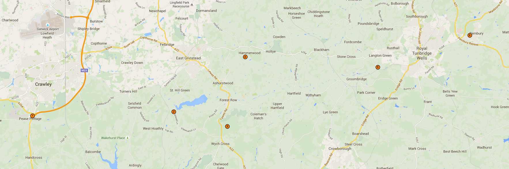

Hiking
Situated in the middle of a chain of 6 campsites, Hammerwood Campsite is perfect for bronze and silver Duke of Edinburgh Award expeditions. Likewise, it is perfect for Chief Scout Award expeditions of all levels.
[picture of vanguard way] The [Vanguard Way] passes through Hammerwood Campsite. It is a long distance walking trail from South London to Newhaven on the south coast. Hiking around Hammerwood can involve traveling through West Sussex, East Sussex and/or Kent. The nearest hospitals can be found in our [Site risk assessment].
Nearby Campsites
-
Stanford Scout Camp Site
StanfordScoutCampSite@gmail.com
https://sites.google.com/site/stanfordscoutcampsite/ -
Blackland Farm Activity Centre
blackland@girlguiding.org.uk
http://www.blacklandfarm.org.uk/ -
Broadstone Warren Scout Camp (closed)
http://www.broadstonewarren.org.uk/ -
Hammerwood Scout Campsite
trevor.flanders@hotmail.co.uk
http://hammerwood.org.uk/ -
Adamswell Scout Campsite
http://www.adamswell.org.uk -
Woodhill Scout & Guide Centre
http://campsites.scouts.org.uk/sites/580